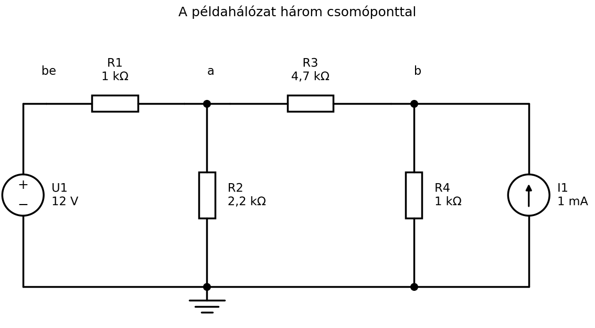
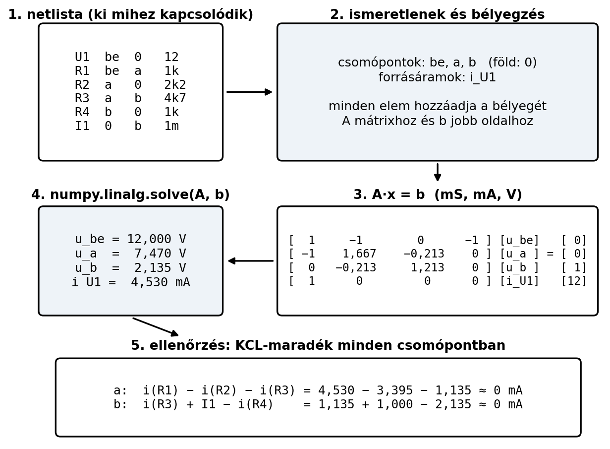

Ennek az alfejezetnek a végére fel tudod írni egy ellenálláshálózat
csomóponti egyenleteit
mátrixos alakban, kezelni tudod a feszültségforrást egy kiegészítő
ismeretlennel (módosított csomóponti módszer), érted az elemek
„bélyegzésének” elvét, és meg tudsz oldani egy hálózatot a könyv
elkit.dc moduljával, a hibaüzenetből felismerve a lebegő
csomópontot.
A szenzormodul 12 V-os bemenetéről egy ellenálláslánc kap tápot, és a lánc egyik pontjába egy áramkimenetű érzékelő (a jelét áramként adó érzékelő) 1 mA-t táplál be. A hálózatnak három nem föld csomópontja, két forrása és négy ellenállása van:

Soros–párhuzamos egyszerűsítéssel itt még elboldogulnál, szuperpozícióval is. Egy tíz csomópontos hálózatnál viszont már kell egy recept, amely mindig ugyanúgy működik, és amelyet a számítógép is végre tud hajtani. Pontosan ezt teszik az áramkör-szimulátorok.
Minden csomópontra felírhatsz egy „könyvelést”: ami az ellenállásokon keresztül elfolyik, az egyenlő azzal, amit a források odavisznek. Ez a Kirchhoff törvényei, soros és párhuzamos kapcsolás csomóponti törvénye. Ha minden áramot a csomóponti feszültségekkel fejezel ki, az egyenletekben csak a csomóponti feszültségek maradnak ismeretlenek. Annyi egyenletet kapsz, ahány ismeretlent.
Definíció. Válasszunk egy referenciacsomópontot (általában a föld, jele 0), amelynek feszültsége definíció szerint 0 V. A többi csomópont csomóponti feszültsége a referenciához mért feszültsége. Két csomópont között az elemen feszültség esik.
A módszer neve csomóponti potenciálok módszere (nodal analysis). A föld nem „nyeli el” az áramot: csak a nullapont, a rá felírt egyenlet a többiből következik, ezért elhagyjuk.
Egy ellenállás vezetése (siemens, S). A rajta -ból felé folyó áram . Ellenőrzés: , a kényelmes mérnöki egységekben .
Vegyünk először egy egyszerűbb, feszültségforrás nélküli hálózatot: mA folyik be az A csomópontba, = 1 kΩ az A-tól a földre, = 2,2 kΩ A és B között, = 4,7 kΩ a B-től a földre. A két csomópontra:
Rendezve az ismeretlenek szerint:
Egy mátrix számok téglalap alakú táblázata, egy vektor egy oszlopnyi szám. Az szorzat -adik eleme: az -adik sorának elemeit rendre megszorozzuk elemeivel, és összeadjuk. Így a két egyenlet egyetlen egyenletként írható:
A vezetésmátrix ránézésre felírható:
Ellenállásokból és áramforrásokból álló hálózatnál a mátrix szimmetrikus.
Számokkal, mS-ban: , , :
A Gauss-elimináció lényege: egy egyenlet többszörösét hozzáadjuk egy másikhoz úgy, hogy egy ismeretlen kiessen. Az első sor -szörösét a másodikhoz adva:
tehát
V, majd az első egyenletből
V. Ellenőrzés soros–párhuzamos egyszerűsítéssel:
Ω, 2 mA ezen 1,747 V-ot ejt. A gép ugyanezt csinálja nagyobb rendszerre:
numpy.linalg.solve(A, b).
Ha az elimináció során egy sorból minden együttható eltűnik, a mátrix szinguláris: az egyenletek nem határozzák meg egyértelműen az ismeretleneket. Villamosan ez többnyire lebegő csomópontot jelent (nincs egyenáramú útja a földhöz, a feszültsége bármi lehet), vagy egymásnak ellentmondó, párhuzamos feszültségforrásokat.
A feszültségforrás árama nem fejezhető ki a feszültségéből: bármekkora lehet. A módosított csomóponti módszer (modified nodal analysis, MNA) ezért új ismeretlent vesz fel, a forrás áramát, és hozzáad egy új egyenletet, a forrás saját törvényét: , ahol a pozitív, a negatív kapocs.
Az elkit.dc konvenciója:
a pozitív kapcson kifelé, a külső körbe folyó áram. A
példahálózatra, a be csomópontot is felírva:
Blokkokra bontva az MNA-rendszer alakja:
a vezetésmátrix, a forrásáramok helye a csomóponti egyenletekben, a forrásegyenletek együtthatói, független forrásnál nulla, a forrásfeszültségek vektora. Egy másik irodalomban a forrásáramot fordítva veszik fel, és a mátrix szimmetrikus lesz; a megoldás ugyanaz, csak előjele más.
A mátrixot nem egyenletenként, hanem elemenként érdemes felépíteni. Minden elem a saját helyeire ad hozzá néhány számot, ez a bélyege (stamp). A föld sorát és oszlopát egyszerűen kihagyjuk. A táblázatban a forráshoz felvett új sor/oszlop, a vezérlő feszültség két csomópontja.
| Elem | A mátrixba | A jobb oldalra |
|---|---|---|
| ellenállás, , – | a és , a és helyre | – |
| áramforrás -ből -be | – | a , az sorba |
| feszültségforrás, a pozitív | : ; : ; : ; : | sor: |
| feszültségvezérelt feszültségforrás, erősítés | mint a feszültségforrás, plusz : ; : | sor: 0 |
| feszültségvezérelt áramforrás , -ből -be | : ; : ; : ; : | – |
A vezérelt forrás értéke egy máshol mért
feszültségtől függ. A feszültségvezérelt feszültségforrás az ideális
műveleti erősítő modellje, a feszültségvezérelt áramforrás a tranzisztor
kisjelű modelljéé; az elkit.dc az elsőt tartalmazza
(add_vcvs).

A netlista (netlist) az áramkör szöveges leírása: soronként egy elem neve, a csomópontjai és az értéke. Ebből minden más gépiesen következik.
Duális módszer: minden független hurokhoz egy hurokáramot rendelünk, és a huroktörvényt írjuk fel. Két hurok, 12 V-os forrás, = 1 kΩ az első, = 2,2 kΩ a közös, = 1 kΩ a második hurokban:
(kΩ, mA, V). A megoldás mA, mA, az feszültsége V. Kézzel azt érdemes választani, amelyik kevesebb ismeretlent ad. A hurokmódszer viszont síkba rajzolható hálózatot feltételez és a gép számára körülményesebb, ezért a szimulátorok MNA-t használnak.
Továbbvitt eredmény. Az MNA-megoldó
(elkit.dc: elemlista, solve,
Solution.v/i/power, thevenin) a Nemlineáris elemek és a munkapont, a Váltakozó áramú hálózatszámítás és teljesítmény,
Az ideális műveleti erősítő és a negatív
visszacsatolás, az Érzékelők illesztése és a
jelút hibaköltségvetése és a Szimuláció és
ellenőrzés alapja. A mátrixos csomóponti alak komplex számokkal
váltakozó áramra is kiterjeszthető (Váltakozó áramú
hálózatszámítás és teljesítmény), a vezérelt forrás bélyege pedig az
Erősítő alapkapcsolások és a kisjelű modell és
a műveleti erősítő modelljéhez kell. A lineáris egyenletrendszerekről
bővebben a gyűjtemény Lineáris algebra kezdőknek könyve
szól.
Vezetések mS-ban: , , , . A bélyegek összege:
1. Az utolsó sor azonnal adja: V.
2. Ezt beírva az a és b sorba, 2×2-es rendszer marad:
3. Elimináció: az első sor -szorosát a másodikhoz adjuk: , azaz , V. Visszahelyettesítve V.
4. Az első sorból mA.
5. Ellenőrzés. Az a csomópontba az -en mA jön, elmegy -n mA és -on mA; a különbség nulla. A b csomópontba mA érkezik, és -en mA megy el. A KCL-maradék (a csomópontba be- és kimenő áramok különbsége) tehát nulla.
Először egy saját, néhány soros MNA-megoldót írunk, hogy lásd: nincs benne varázslat.
import numpy as np
netlista = [("V", "U1", "be", "0", 12.0), ("R", "R1", "be", "a", 1e3),
("R", "R2", "a", "0", 2.2e3), ("R", "R3", "a", "b", 4.7e3),
("R", "R4", "b", "0", 1e3), ("I", "I1", "0", "b", 1e-3)]
def mini_mna(netlista):
csomo = []
for _, _, p, m, _ in netlista:
csomo += [n for n in (p, m) if n != "0" and n not in csomo]
forrasok = [nev for t, nev, *_ in netlista if t == "V"]
ix = {n: k for k, n in enumerate(csomo + forrasok)}
A, b = np.zeros((len(ix), len(ix))), np.zeros(len(ix))
def add(sor, oszlop, ertek):
if sor in ix and oszlop in ix: # a föld sora/oszlopa kimarad
A[ix[sor], ix[oszlop]] += ertek
for t, nev, p, m, v in netlista:
if t == "R":
g = 1 / v
add(p, p, g); add(m, m, g); add(p, m, -g); add(m, p, -g)
elif t == "I":
for n, s in ((p, -1), (m, 1)):
if n in ix:
b[ix[n]] += s * v
else:
add(p, nev, -1); add(m, nev, 1); add(nev, p, 1); add(nev, m, -1)
b[ix[nev]] = v
return list(ix), np.linalg.solve(A, b)
nevek, x = mini_mna(netlista)
for nev, ertek in zip(nevek, x):
print(f"{nev:>3}: {ertek:.5g}") be: 12
a: 7.4697
b: 2.135
U1: 0.0045303Ugyanez az elkit.dc osztályával, amely az elemáramokat,
a teljesítményeket és a Thévenin-adatokat is megadja:
from elkit import units
from elkit.dc import Circuit, thevenin
c = Circuit().add_vsource("U1", "be", "0", 12.0).add_resistor("R1", "be", "a", 1e3)
c.add_resistor("R2", "a", "0", 2.2e3).add_resistor("R3", "a", "b", 4.7e3)
c.add_resistor("R4", "b", "0", 1e3).add_isource("I1", "0", "b", 1e-3)
A, rhs, csomopontok, agak = c.matrices()
print("ismeretlenek:", csomopontok, agak)
s = c.solve()
for n in csomopontok:
print(f"u_{n} = {s.v(n):.4f} V")
print("i(U1) =", units.fmt(s.i("U1"), "A", digits=4))
for nev in ("R1", "R2", "R3", "R4", "I1", "U1"):
print(f"P({nev}) = {units.fmt(s.power(nev), 'W'):>9}")
osszeg = sum(s.power(e.name) for e in c.elements)
print("teljesítménymérleg nulla:", abs(osszeg) < 1e-12)
maradek = s.i("R1") - s.i("R2") - s.i("R3")
print("KCL-maradék az a csomópontban nulla:", abs(maradek) < 1e-12)
u_th, r_th = thevenin(c, "b")
print("Thévenin a b-n:", units.fmt(u_th, "V", digits=4), units.fmt(r_th, "Ω", digits=4))ismeretlenek: ['be', 'a', 'b'] ['U1']
u_be = 12.0000 V
u_a = 7.4697 V
u_b = 2.1350 V
i(U1) = 4.53 mA
P(R1) = 20.5 mW
P(R2) = 25.4 mW
P(R3) = 6.05 mW
P(R4) = 4.56 mW
P(I1) = -2.14 mW
P(U1) = -54.4 mW
teljesítménymérleg nulla: True
KCL-maradék az a csomópontban nulla: True
Thévenin a b-n: 2.135 V 843.4 ΩA negatív teljesítmény leadott teljesítményt jelent: mindkét forrás ad energiát, és az összes teljesítmény összege (a kerekítési hibától eltekintve) nulla. Végül két hibás hálózat:
lebego = Circuit().add_vsource("U1", "in", "0", 5.0).add_resistor("R1", "in", "a", 1e3)
lebego.add_resistor("R2", "x", "y", 1e3) # az x–y ág nincs a földhöz kötve
parhuzamos = Circuit().add_vsource("U1", "a", "0", 5.0).add_vsource("U2", "a", "0", 3.3)
for nev, halo in (("lebegő ág", lebego), ("párhuzamos források", parhuzamos)):
try:
halo.solve()
except ValueError as hiba:
print(f"{nev}:")
print(" " + str(hiba)[:46])
print(" " + str(hiba)[46:])lebegő ág:
a hálózat nem oldható meg egyértelműen: lebegő
csomópont (nincs út a földhöz) vagy párhuzamos feszültségforrások?
párhuzamos források:
a hálózat nem oldható meg egyértelműen: lebegő
csomópont (nincs út a földhöz) vagy párhuzamos feszültségforrások?Az üzenet mindkét esetben ugyanaz, mert a gép csak azt látja, hogy a mátrix szinguláris; az okot neked kell megkeresni a netlistában.
elkit.dc-ben a pozitív kapcson kifelé
folyó áram pozitív.elkit-tel, és
hasonlítsd össze az 1,1 V-tal.mini_mna függvényt feszültségvezérelt áramforrással (típus
"G", a netlistában két további vezérlő csomóponttal).
Próbáld ki: +5 V sínről 1 kΩ a ki csomópontba, onnan a földre egy
mS-os forrás, amelyet az be csomópont 1 V-ja vezérel.A csomóponti potenciálok módszere minden nem föld csomópontra KCL-t
ír fel a csomóponti feszültségekkel:
.
A
főátlójában a csomópontra kötött vezetések összege, azon kívül a közös
vezetés mínusz előjellel, jobb oldalon a befolyó forrásáramok állnak. A
feszültségforrás új ismeretlent (forrásáram) és egy egyenletet
()
ad: ez az MNA. A mátrixot elemenként bélyegezzük, a rendszert
Gauss-eliminációval vagy numpy.linalg.solve-val oldjuk meg,
a KCL-maradékkal ellenőrzünk. Szinguláris mátrix: lebegő csomópont vagy
ellentmondó források. A vezérelt forrás bélyege a vezérlő csomópontok
oszlopába ír.
1. mS-ban , , :
A determináns (2×2-nél ) , és V, V. Ellenőrzés: .
2. Ismeretlenek (mS, mA):
V, a második sorból V, az elsőből mA.
3. A sín ismert (3,3 V), ezért elég az m1 és m2 egyenlete, mS-ban: , , :
A determináns ; V, V, a különbség V, pontosan a Thévenin-módszerrel kapott érték.
4. nélkül az 1 mA az -on a b-ből az a felé folyik: V, V . Kikapcsolt forrásokkal kΩ. Az osztó: , innen kΩ (E24-ből 1,5 kΩ).
5.
c = Circuit().add_vsource("Up", "p", "0", 0.1).add_vcvs("E1", "ki", "0", "p", "n", 1e5)
c.add_resistor("Rf", "ki", "n", 10e3).add_resistor("Rg", "n", "0", 1e3)
s = c.solve()
print(f"u_ki = {s.v('ki'):.5f} V, u_n = {s.v('n'):.6f} V")u_ki = 1.09988 V, u_n = 0.099989 VAz eredmény 0,01 %-kal kisebb az 1,1 V-nál, és szinte pontosan : a nagy erősítés a két bemenet különbségét kicsire szorítja (részletesen Az ideális műveleti erősítő és a negatív visszacsatolás).
6. A vezérelt forrás értéke helyén egy hármast adunk
meg: (g, cp, cm). A függvény csak egy új ággal bővül, a
bélyeg táblázata szerint:
def mini_mna_g(netlista):
csomo = []
for _, _, p, m, _ in netlista:
csomo += [n for n in (p, m) if n != "0" and n not in csomo]
forrasok = [nev for t, nev, *_ in netlista if t == "V"]
ix = {n: k for k, n in enumerate(csomo + forrasok)}
A, b = np.zeros((len(ix), len(ix))), np.zeros(len(ix))
def add(sor, oszlop, ertek):
if sor in ix and oszlop in ix:
A[ix[sor], ix[oszlop]] += ertek
for t, nev, p, m, v in netlista:
if t == "R":
add(p, p, 1 / v); add(m, m, 1 / v); add(p, m, -1 / v); add(m, p, -1 / v)
elif t == "V":
add(p, nev, -1); add(m, nev, 1); add(nev, p, 1); add(nev, m, -1)
b[ix[nev]] = v
elif t == "G": # vezérelt áramforrás
g, cp, cm = v
add(p, cp, g); add(p, cm, -g); add(m, cp, -g); add(m, cm, g)
return dict(zip(ix, np.linalg.solve(A, b)))
eredmeny = mini_mna_g([("V", "U5", "p5", "0", 5.0), ("V", "Ube", "be", "0", 1.0),
("R", "RC", "p5", "ki", 1e3), ("G", "G1", "ki", "0", (2e-3, "be", "0"))])
print(f"u_ki = {eredmeny['ki']:.4f} V")u_ki = 3.0000 VA 2 mS · 1 V = 2 mA az 1 kΩ-on 2 V-ot ejt, tehát
V. A vezérlő csomópontoknak (itt be) legalább egy másik
elem kivezetéseként is szerepelniük kell, különben a feszültségük nem
volna meghatározott.